Simulation drives modern robotic manipulation research, yet the diversity of available 3D assets is usually limited to small, biased CAD collections that brittle motion planners and learned policies overfit to. We present a dataset-free framework for generative 3D object modeling targeted at manipulation in ROS 2.
Each candidate object is expressed as a union of parametric primitives and scored on size feasibility, static stability, a continuous graspability metric, and mesh validity. A lightweight Cross-Entropy optimizer adapts the parameter distribution toward high-scoring objects without any external dataset, and every accepted object is exported with consistent inertial properties and friction-sampled surfaces, ready for MoveIt 2 and Gazebo.
To break the circularity that arises when training and evaluation share an objective, we report three independent downstream metrics on a Franka Panda: force-closure grasp synthesis, MoveIt 2 motion-planning success, and Gazebo dynamic stability. Averaged over three seeds, our generator reaches 97.7%, 100%, and 98.7% respectively, dominating CMA-ES, a genetic algorithm, random search, and a fixed CAD library on two of the three metrics outright while preserving competitive shape diversity across 200,000 generated objects in 20 archetypes.
Each object is a union of primitives drawn from 18 types (box, cylinder, sphere, capsule, cone, pyramid, torus, ellipsoid, wedge, plus a hollow shell, handle, frustum, hemisphere, hex prism, open tube, and n-gon prism) with rigid transforms. Mass, COM, and inertia are closed-form or mesh-derived, so every exported asset ships with physically consistent inertial properties.
Four components score size feasibility, static stability (COM-to-support-polygon margin), a continuous graspability metric (soft antipodal pairs within gripper width), and mesh validity.
A factored Gaussian over primitive parameters (dimensions in log-space) is updated each iteration to maximise the likelihood of the top-20% elite samples. Gradient-free, dataset-free, CPU-only, converges in ~30 iterations.
Each accepted object is exported as URDF + SDF + meshes + metadata with parallel-axis
inertia and Coulomb friction sampled from 𝒩(0.8, 0.2). The companion
generated_objects_eval package consumes the manifest from MoveIt 2 and
Gazebo nodes.
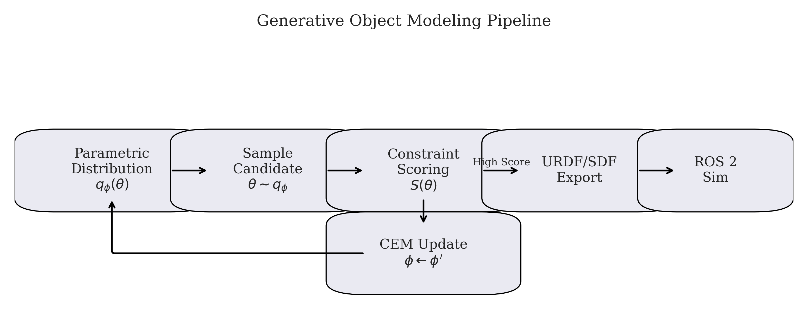
Offline generation produces a manifest of URDF/SDF assets; the
generated_objects_eval ROS 2 package consumes that manifest from
MoveIt 2 and Gazebo nodes.
Objects are assembled from 18 primitive types. Each row below varies one type to show its degrees of freedom — how many independent shape parameters it has (a sphere has one, a box has three). The newest two — a hollow shell and a handle — were added from this audit to make mugs, cups, and pots real hollow vessels instead of solid cylinders.
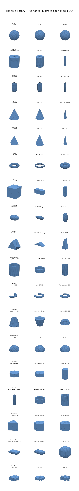
The 18 primitive types, each shown with variants that exercise its degrees of freedom.
Most archetypes are faithful, but every container, handle, taper, and dome is faked
with a solid or full-ring stand-in — a mug body is a solid cylinder, a cup handle a
full torus. The CEM can only assemble solid primitives, so it can never discover a hollow or
handled object. A full fidelity audit and ready-to-implement designs for new primitives
(hollow shell, partial-arc handle, frustum, hemisphere) are in
docs/PRIMITIVES.md.
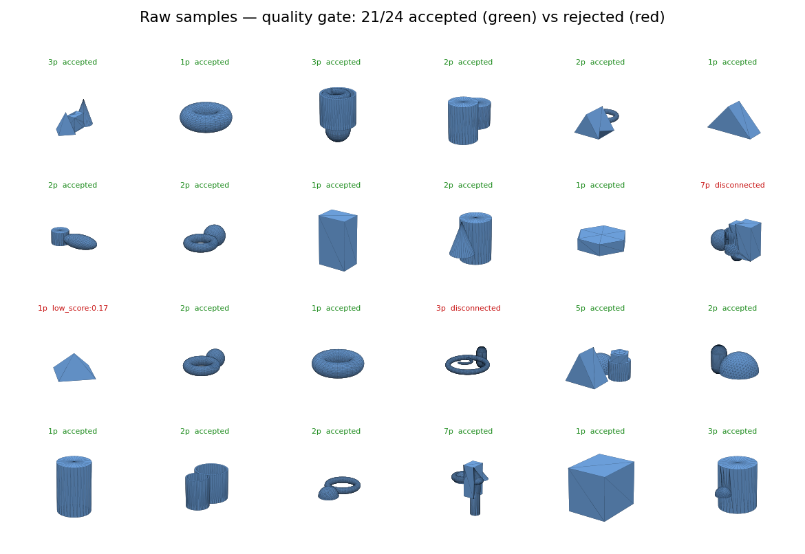
Raw samples — quality gate accepts (green) / rejects (red).
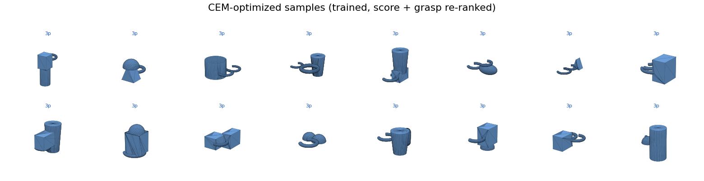
CEM-optimized set — cleaner, but still only solid primitives.
The same generator can be steered with simple constraints on the primitive palette, count, and placement. Below: a systematic sweep of single-type unions (each of the 14 types, N = 2…10 copies), every two-type pair, and bilaterally-symmetric variants — alongside curved-only vs faceted-only batches.
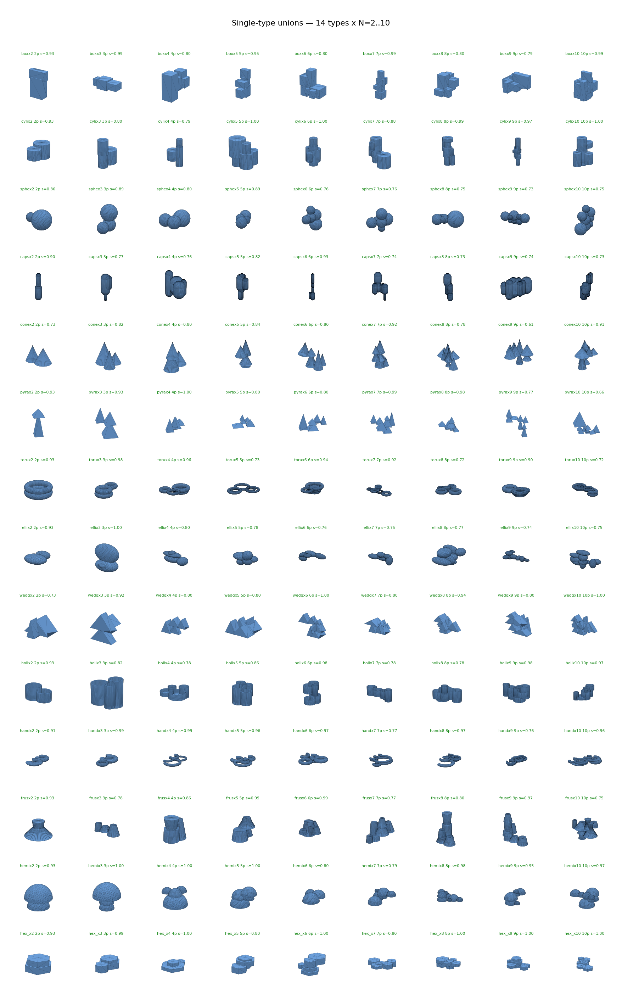
Single-type unions — rows are the 18 primitive types, columns are N = 2…10 copies unioned into one connected body.
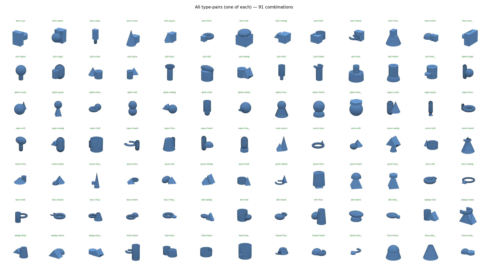
All 91 two-type pairs (one of each).
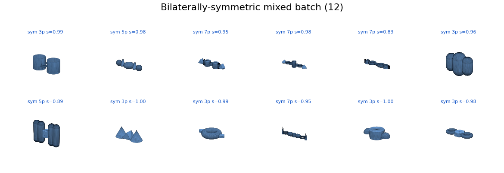
Bilaterally-symmetric objects (mirror across a plane).
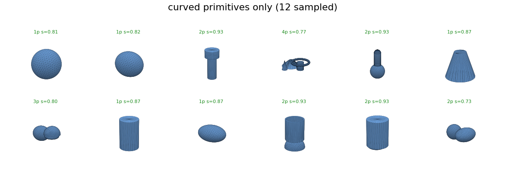
Curved primitives only.
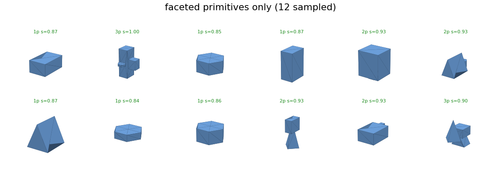
Faceted primitives only (box, pyramid, wedge, hex).
Each hand-written archetype is a parametric template; a per-archetype CEM tunes its parameters to produce many tuned variations.
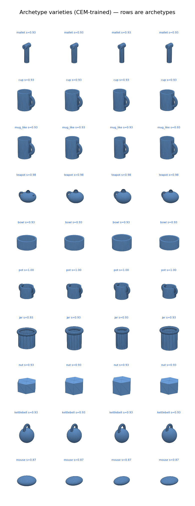
CEM-trained varieties — each row is one archetype.
What's next — new archetypes and primitives on the backlog — is in
docs/ROADMAP.md.
Recording instructions in DEMO.html.
Three independent downstream metrics, averaged over three seeds (42, 43, 44) on the top-25 objects per method. The suitability score is reported for completeness but saturates for every method (mean ≥ 0.98) — it is the objective CEM optimises and is therefore not a fair discriminator.
| Method | Force-closure grasp | MoveIt 2 plan | Gazebo stable | Feature diversity |
|---|
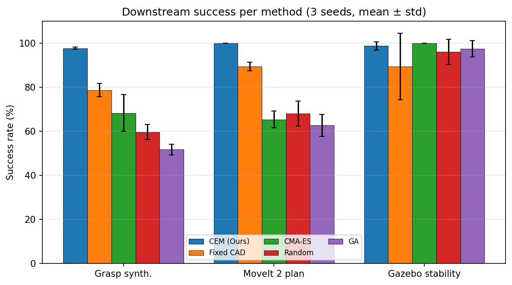
Downstream success per method (3-seed mean ± std). CEM dominates grasp synthesis and MoveIt 2 planning; Gazebo stability is essentially a tie among the four optimisers.
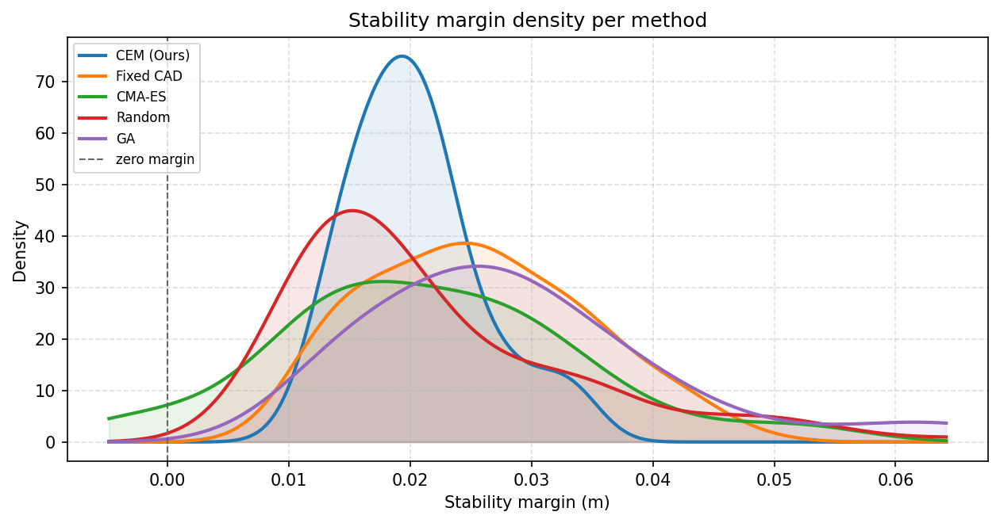
Per-object stability-margin density across the 100 top-K objects each method returns. CEM concentrates around a 2 cm margin with a narrow peak; baselines spread broadly and leak into the negative half-plane.
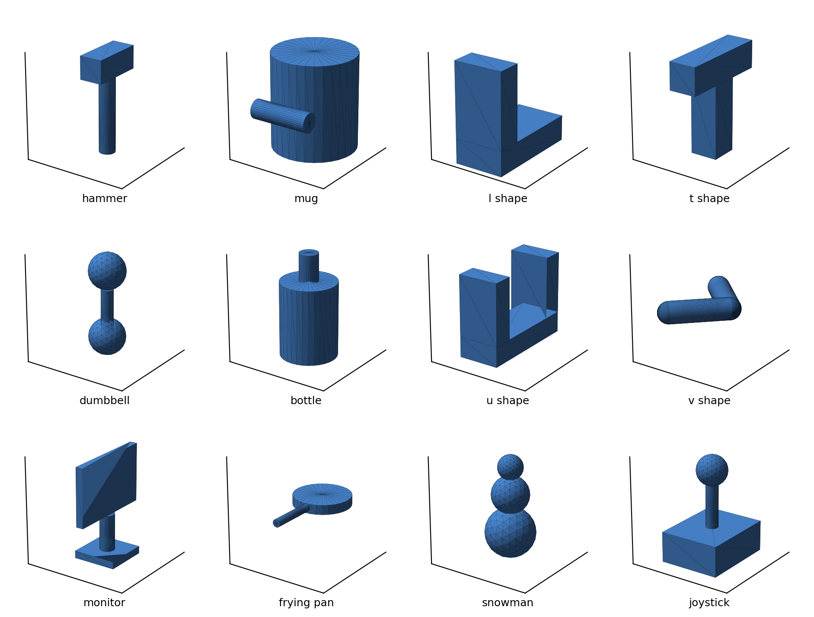
Representative CEM-generated objects: hammer-like (cylinder + orthogonal box) and bottle-like (cylinder + sphere) compositions emerge purely from the four scoring components.
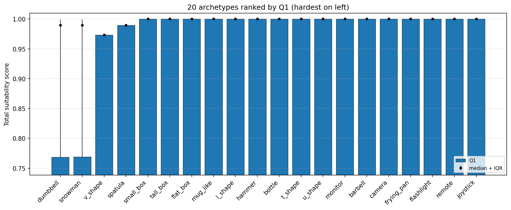
20 archetypes ranked by their first-quartile suitability score (hardest on the left). Dumbbell and snowman are the only archetypes whose Q1 does not saturate at S = 1.0.
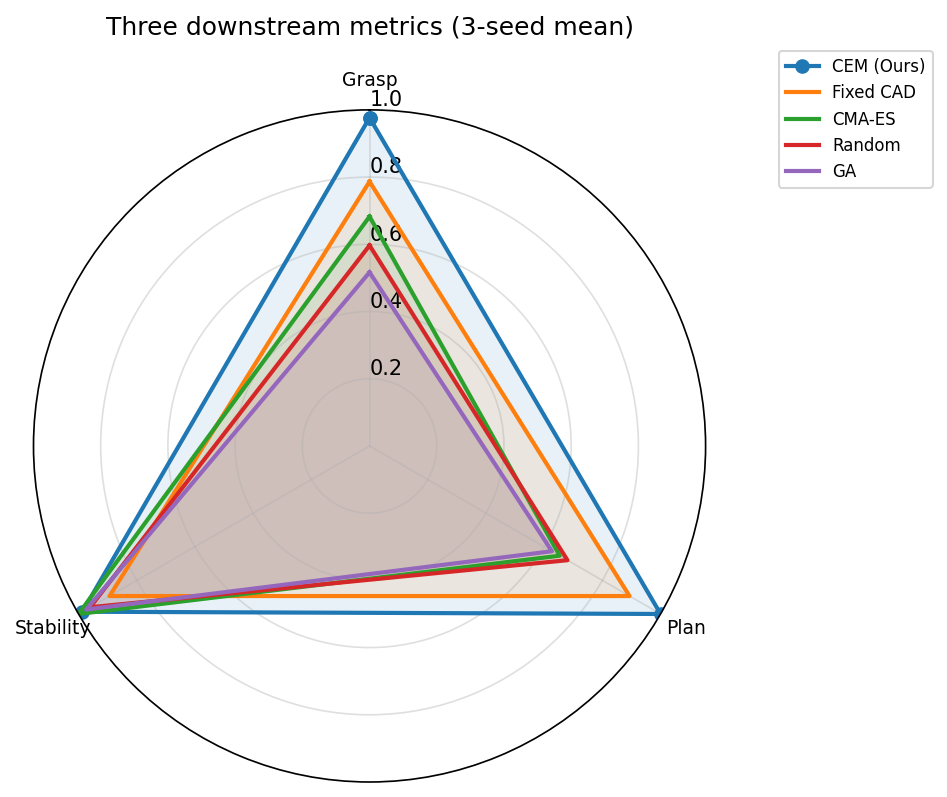
CEM's polygon (blue) encloses every baseline on the three downstream axes while sitting essentially on the outer ring for stability.
Three independent stages: a Python evaluation that produces the suitability/diversity/grasp numbers, a MoveIt 2 launch that produces the planning-success numbers, and a Gazebo launch that produces the dynamic-stability numbers. Full step-by-step in REPRODUCE.html.
# 1. Generate a manifest of top-K objects per method.
# --top-k 25 reproduces the paper; bump to 100 for the larger demo rotation.
python3 scripts/build_eval_manifest.py \
--budget 1500 --top-k 25 --seed 42 \
--out output/eval_manifest.json
python3 scripts/patch_sdf_collision.py --manifest output/eval_manifest.json
# 2. Python-level evaluation (suitability, force-closure grasp, diversity).
python3 scripts/run_unified_eval.py \
--budget 1500 --top-k 100 --seed 42 \
--out output/unified_eval.json
# 3. MoveIt 2 motion-planning success rate.
cd ros2_ws && colcon build --packages-select generated_objects_eval
source install/setup.bash
ros2 launch generated_objects_eval moveit_planning_eval.launch.py \
manifest:=../output/eval_manifest.json \
out:=../output/moveit_results.json
# 4. Gazebo dynamic-stability rate.
ros2 launch generated_objects_eval stability_world.launch.py &
sleep 5
ros2 run generated_objects_eval gazebo_stability_eval \
--manifest ../output/eval_manifest.json \
--out ../output/gazebo_stability.json
# 5. Aggregate across seeds.
python3 scripts/aggregate_seeds.py 42 43 44 --out docs/data/results.json
The visual pick-and-place demo (used for the videos) is launched separately:
ros2 launch generated_objects_eval visual_demo.launch.py use_gz_control:=true
The launch picks output/seed_42/eval_manifest.json automatically,
spawns a different random object each cycle, publishes the table as a CollisionObject
so MoveIt 2 plans around it, and hands the trajectory to panda_arm_controller
so the Panda actually moves under gz_ros2_control. Drop the
use_gz_control:=true flag for RViz-only animation.
See DEMO.html for screen-recording options, the NVIDIA EGL workaround, and the four scene scripts.
@inproceedings{albatati2026generative3d,
title = {Generative 3D Object Modeling for Robust Robot Manipulation in ROS 2},
author = {Al-Batati, Abdulrahman S. and Alhabashi, Yasser and Gabr, Khaled
and Sibaee, Serry and Abdelkader, Mohamed and Boulila, Wadii},
booktitle = {Proceedings of the 2026 International Conference on Advanced
Robotics and Mechatronics (ICARM)},
address = {Paris, France},
year = {2026},
}